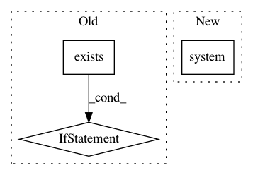

b8157131d89d3808e3df6549bde8184543c7b21b,docs/conf.py,,,#,23
Before Change
// Make a symlink in our sphinx source directory to the top-level
// examples/notebooks directory so we can include notebooks in the doc
notebooks = Path("./notebooks")
if not notebooks.exists():
print("Making symlink to ../examples/notebooks")
notebooks.symlink_to("../examples/notebooks")
// -- Project information -----------------------------------------------------
project = "pyjanitor"
now = datetime.datetime.now()
After Change
if platform.system() == "Windows":
// Only for windows
os.system("mklink /J notebooks ..\\examples\\notebooks")
else:
try:
print("Making symlink to ../examples/notebooks")
notebooks.symlink_to("../examples/notebooks")
In pattern: SUPERPATTERN
Frequency: 3
Non-data size: 3
Instances
Project Name: ericmjl/pyjanitor
Commit Name: b8157131d89d3808e3df6549bde8184543c7b21b
Time: 2019-07-14
Author: 37330255+jk3587@users.noreply.github.com
File Name: docs/conf.py
Class Name:
Method Name:
Project Name: kubeflow/kubeflow
Commit Name: 99c94d88c96c2b0a45bbbef4c8a126fa018ce513
Time: 2018-10-11
Author: 37601826+kunmingg@users.noreply.github.com
File Name: bootstrap/build.py
Class Name:
Method Name: main
Project Name: ultralytics/yolov3
Commit Name: f3d3295f90531e064c50901319443a7feeb33bc9
Time: 2020-02-27
Author: glenn.jocher@ultralytics.com
File Name: utils/google_utils.py
Class Name:
Method Name: gdrive_download